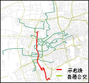
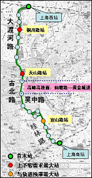
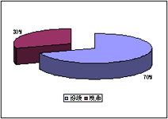
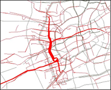

上海南站—西站高等级公交专用道客流预测 ( 2008年04月08日 )
上海南站—西站高等级公交专用道客流预测</STRONG>
研究时间：2007年7月—2007年8月</P>

上海南站—西站高等级公交专用道（下称专用道）北起上海西站，南至上海南站，全线沿大渡河路—古北路—钦州北路/钦江路—桂林路布设，长约15km。根据城交局提供的资料，专用道上共运营两类公交线路，一是示范线1条，为新辟线路，起终点在上海西站和南站，共设置16对中途站，平均站距约1km左右；二是普通公交线路8条，分别为136路、838路、766路、63路、852路、54路、69路和836路，“并站”换乘站点为铜川路站、武宁路站、天山路站和仙霞路站。依托公交模型，对专用道的站点客流进行预测研究，量化分析2010年和2020年专用道的客流需求及示范线的客流特征；并对2020年轨道交通15号线建成后对示范线的影响进行分析。</P>公交专用道线路走向示意图
一、客流规模预测

在全市交通需求预测中，2010年全市公交日均客运量1800万乘次；2020年全市公交日均客运量上幅67%，达3000万乘次。<BR> 1.2010年专用道日均客运量为5.2万乘次，其中示范线为4.7万乘次。从站点客流规模看，铜川路站的上下客流量最大，达到1.5万人；其次是天山路站，为1.4万人。从换乘情况看，宜山路站是与轨道换乘最大的车站，日均换乘量达到0.9万人。<BR> 2.2020年（无轨道15号线）专用道日均客流规模为11.4万乘次，其中示范线为11.1万乘次。从站点客流规模看，天山站的上下客流量最大，达到4.2万人，主要原因是轨道14号线建成，城市西北部与中心城联系的加强，乘客不需要再通过铜川路站使用示范线换乘进入中心城。从换乘情况看，宜山路站是与轨道换乘最大的车站，日均换乘量达到2.3万人。</P>
公交专用道站点
公交专用道客流统计表
| 客流指标 |
2010年</P> |
2020年（无15号线）</P> |
| 全日客运量(万乘次) |
5.2 |
11.4 |
| 其中：示范线 |
4.7 |
11.1 |
| 地面公交线路（8条） |
0.5 |
0.3 |
| 示范线乘距（公里）</P> |
6.8 |
4.9 |
二、示范线的客流特征<BR> 1.沿线客流占七成，上下班通勤高峰明显
沿线客流指出发地和目的地均在专用道慢行接驳范围内的客流。2010年，70%为沿线客流；2020年，沿线客流比重有所下降，为60%。沿线客流主要由苏州河以北的居住区与苏州河以南的虹桥经济技术开发区和漕河泾新兴技术开发区的工作客流构成。交通可能具有很强的方向不均衡性和时段性。<BR> 2.换乘客流占三成，主要联系市区与松江新城<BR> 2010年，30%为换乘客流；2020年，换乘客流比重提高到40%；平均乘距也由2010年的6.8km下降至4.9km，长距离乘客发生了转移。2020年除可与轨道11、2、10、9和1号线换乘外，还增加了14、13和12号线。根据换乘客流的规模和流向可以判断，客流对内主要是来往于市区、对外主要是来往于松江新城。</P>


2010年示范线客流组成图 2020年示范线客流流向
三、与轨道15号线的关系<BR> 15号线北起陈太路南至紫竹院区，在大渡河路—古北路段与专用道高度重合。因此，15号线与示范线存在明显的竞争关系。<BR> 15号线对示范线客流的影响较大，分流近15%。2020年，在无15号线的情况下，示范线日均客运量为11.1万乘次；而在有15号线的情况下，示范线的日均客运量下降到6万乘次，分流近50%。</P>
2020年客流统计表（单位：万乘次/日）
|
|
有全程示范线/无15号线 |
有全程示范线/有15号线 |
| 示范线</P> |
11.1 |
6.0 |
| 15号线 |
—</P> |
22.9 |


地址：上海市静安区铜仁路331号11楼 邮编：200040 Web:site:www.scctpi.sh.cn
电话：（021）62477711 62890464 传真：（021）62472386 62892787
 沪ICP备11003425号-4
沪ICP备11003425号-4